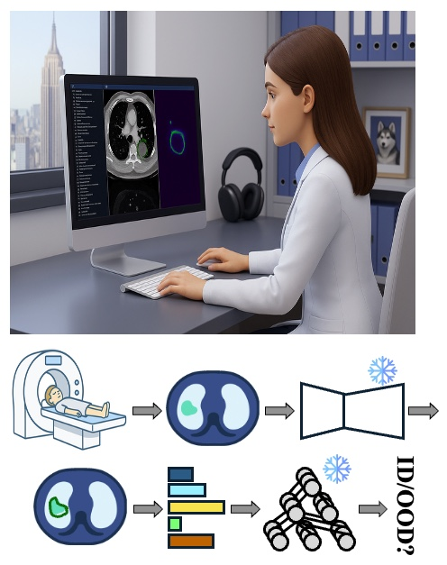
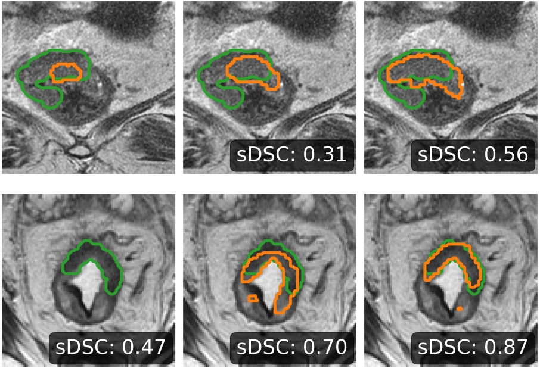
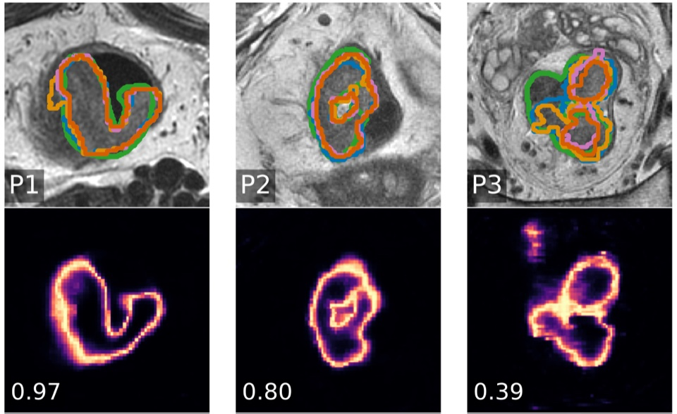
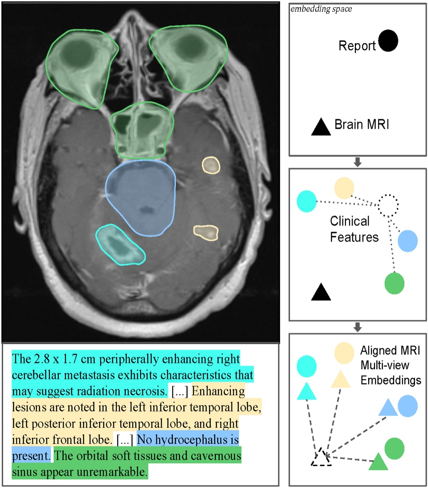
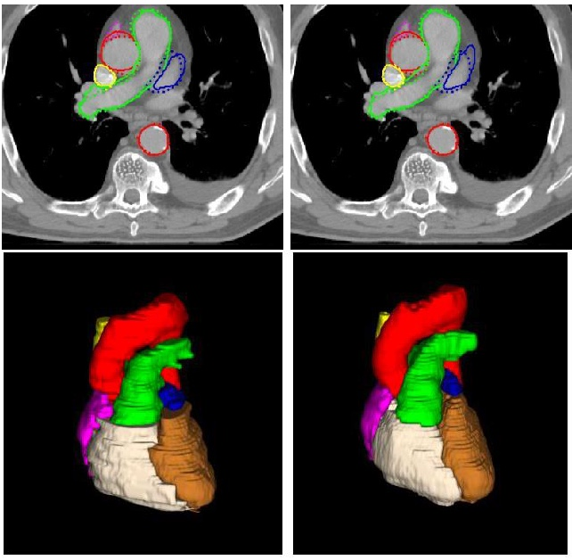
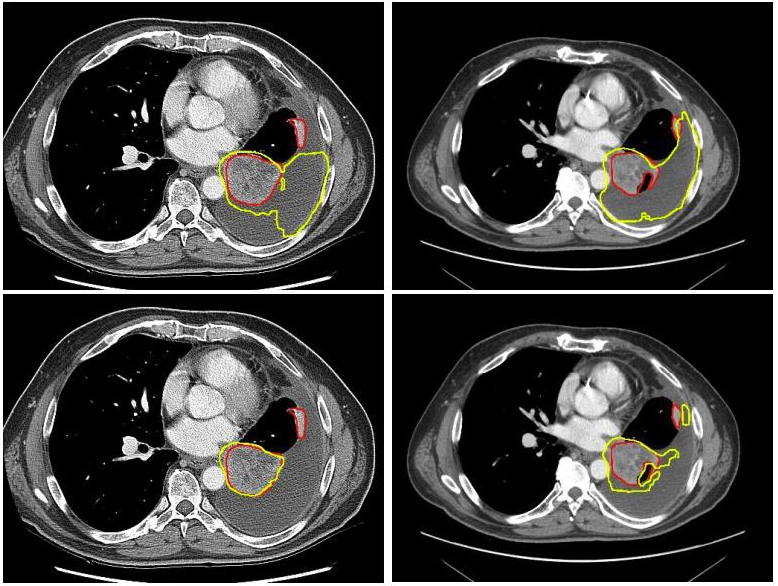
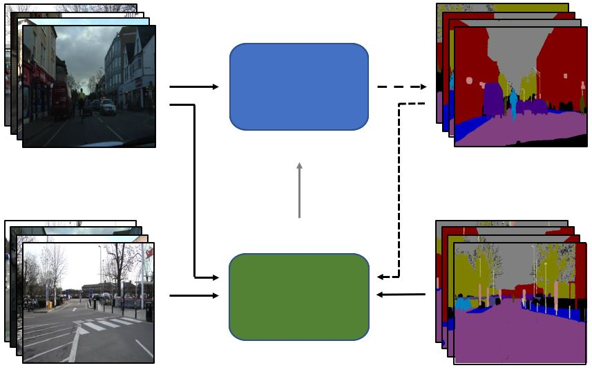
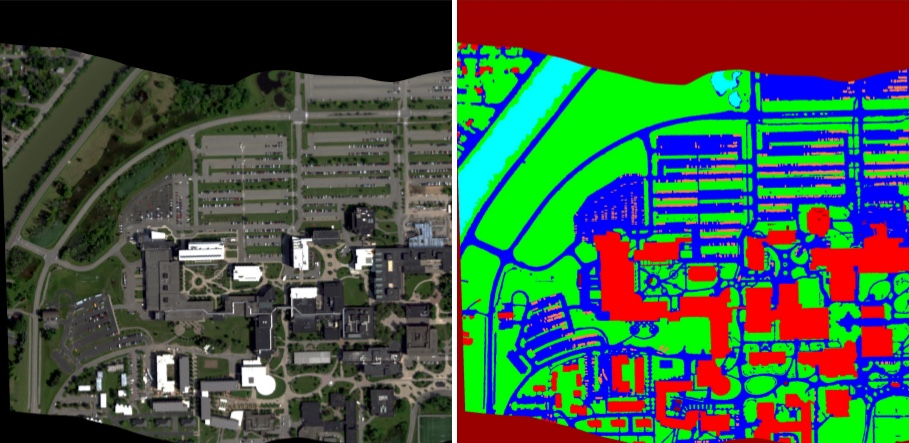

Imaging biomarkers for oncology
Turning CT, MRI, and PET into quantitative biomarkers with radiomics and foundation-model features, to support oncology drug development.
Senior AI Scientist, Computational Radiology
AstraZeneca · Boston, MA
At AstraZeneca, I am responsible for developing radiology imaging biomarkers in the Radiology & Theranostics team, turning CT, MRI, and PET into quantitative readouts that help select indications, detect early signs of biological activity, and stratify patients for oncology trials. My research focuses on making vision and multimodal foundation models reliable enough for that setting: robustness to distribution shift, uncertainty, and out-of-distribution detection.
Previously, I was a Research Fellow at Memorial Sloan Kettering Cancer Center with Dr. Harini Veeraraghavan. I received my Ph.D. in Imaging Science from Rochester Institute of Technology, advised by Dr. Matthew Hoffman and co-advised by Dr. Christopher Kanan and Dr. Emmett Ientilucci.
New preprint: Adaptive computation with conformal certification, uncertainty-aware sparse inference with risk guarantees for large scientific images.
Joined AstraZeneca in Boston as a Senior AI Scientist in Computational Radiology.
SWIFT, parameter-efficient CT-to-MRI transfer for rectal cancer segmentation, accepted at the MICCAI 2026 MIART workshop; code is out.
Tumor-aware augmentation for CT-to-MRI transfer accepted to Biomedical Signal Processing and Control; code is out.
New preprint: TREX predicts rectal cancer regrowth from longitudinal endoscopy, matching attending surgeons' accuracy.
Turning CT, MRI, and PET into quantitative biomarkers with radiomics and foundation-model features, to support oncology drug development.
Self-supervised pretraining of 3D transformers on large CT collections, extended to MRI and PET with language supervision.
Lightweight out-of-distribution detection and uncertainty estimates that keep models safe across scanners, protocols, and hospitals.

Transactions on Machine Learning Research (TMLR), 2026
RF-Deep is a lightweight, plug-and-play OOD detector that improves the safety of automated tumor segmentation from 3D CT. It trains random forests on hierarchical deep features from the segmentation model's own backbone, with no changes to the model, to flag imaging outliers. Across 1,916 scans it outperformed existing methods, exceeding 93.5 AUROC on two near-OOD datasets and reaching 99.0 AUROC on two far-OOD datasets.

Biomedical Signal Processing and Control, 2026
We identified two interacting failure modes when CT-pretrained transformers are transferred to MRI rectal cancer segmentation: wasted tokens from zero-padding and ineffective feature adaptation. Tumor-aware augmentation and anisotropic cropping fixed both, reaching 91.1% detection with SMIT, 88.7% with Swin UNETR, and 90.3% with VoCo on 247 test cases.

MICCAI Workshop on Medical Image AI in Radiation Therapy (MIART), 2026
SWIFT adapts a Swin V2 encoder, pretrained on 10,444 public 3D CT volumes, to T2-weighted MRI. Compressing the decoder cut parameters by 70% while raising tumor detection from 89.9% to 93.9%; LoRA kept similar accuracy with 14.6% of the trainable parameters, and a LoRA-decoder ensemble gave the best calibration.

Winter Conference on Applications of Computer Vision (WACV), 2026
brat (Brain Report Alignment Transformer) is trained on 75k MRI–report pairs with a pairwise view-alignment and a diversity-promoting loss. It outperforms prior methods on image–text retrieval, tumor segmentation, and Alzheimer's classification, and enables high-quality automatic report generation from MRIs.

Physics and Imaging in Radiation Oncology, 2026
A pretrained transformer with a convolutional decoder, fine-tuned with a balanced mix of contrast and non-contrast CTs, approached full-data performance with 64% fewer training scans, generalized from lung to breast cancer patients better than nnU-Net, and produced dose metrics equivalent to manual delineations.

Medical Physics, 2025
Large-scale self-supervised pretraining on uncurated, in-the-wild CT made lung tumor segmentation more robust: fine-tuned Swin transformers consistently outperformed self-pretrained Swin and ViT counterparts across varied acquisition protocols.

Winter Conference on Applications of Computer Vision (WACV), 2023
arXivPublicationCodePosterSlides
S4AL combines semi-supervised and active learning so that only the most informative image regions are annotated. It reached over 95% of full-dataset performance with under 17% of pixel annotations on CamVid and Cityscapes.

IEEE Transactions on Geoscience and Remote Sensing (TGRS), 2020
AeroRIT is an aerial hyperspectral dataset, with buildings and cars as well as vegetation and roads, designed for training CNNs for scene understanding, with benchmarks across several architectures.
Senior AI Scientist, Computational Radiology · Boston, MA
Imaging-derived biomarkers for oncology drug development (Radiology & Theranostics).
Research Fellow, AI for Medical Imaging · New York, NY
Self-supervised foundation models and OOD-detection pipelines for radiology across multiple hospitals; LoRA/DoRA fine-tuning of ~100M-parameter imaging encoders that cut training compute by ~30% and trainable parameters by ~90%.
Graduate Research Assistant · Rochester, NY
Self- and semi-supervised learning for hyperspectral imagery; released the AeroRIT and RooftopHSI datasets.
Research Intern · Princeton, NJ
Continual self-supervised learning for aerial object counting.
Research Intern · Rochester, NY
GAN-based data augmentation for vehicle occupancy estimation.
Reviewer for CVPR, ICCV, ECCV, MICCAI, Medical Physics, IEEE TIP, and IEEE TGRS.
PyTorch, JAX, Hugging Face, MONAI, Docker, Slurm, Weights & Biases.